回忆🤔
- 比尔盖茨 将 公开信
- 发到 家酿俱乐部
- 冒 天下之大不韪
- 起诉 自由分享的行为
- 会有
什么结果 呢？
- 家酿的黑客群体
软件行业缘起
- 自1945年以来
- 计算机技术吸引了世界上最睿智和最有创意的人
- 有一批编程爱好
- 他们创造另一种技术文化
- 他们编软件和玩软件只是出于乐趣
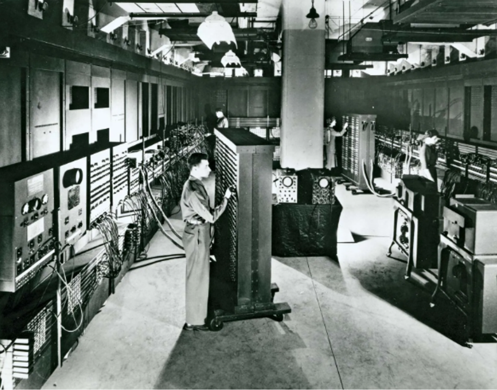
- MIT（Massachusetts Institute of Technology）有了第一台PDP-1
- MIT铁路模型俱乐部（Tech Model Railroad Club）的信号和动力委员会（Signals and Power Committee）把这台机器当作他们最喜欢的科技玩具
- 并由此发明了一系列的
- 编程工具
- 俚语
- 以及直到今天仍然依稀可辨的文化氛围
ARPA网
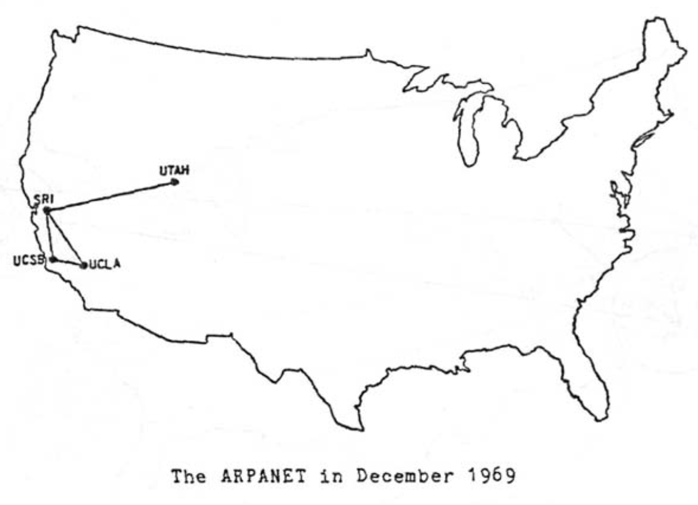
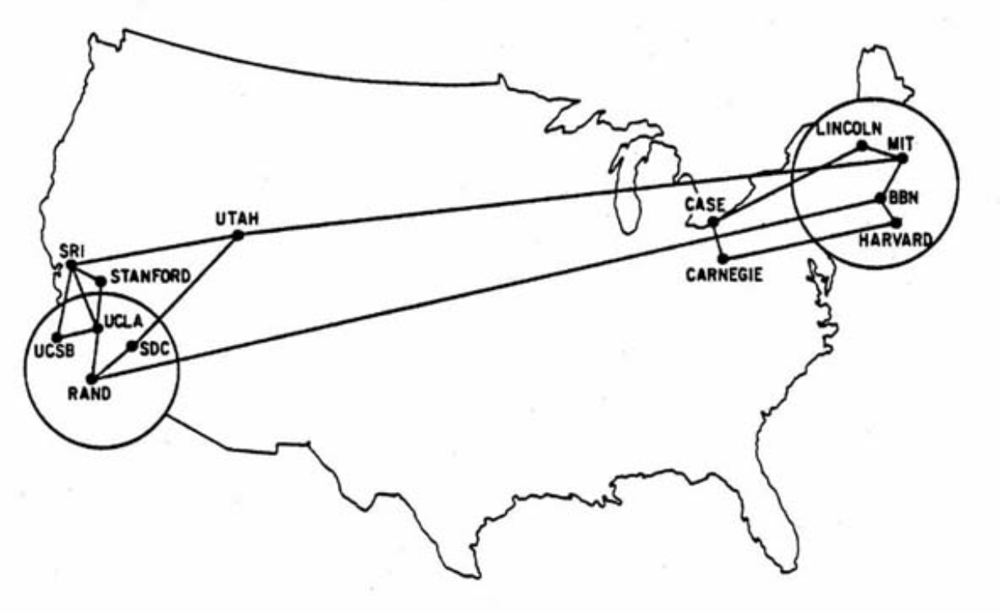
- MIT的AI实验室和计算机科学实验室（LCS）
- 斯坦福大学人工智能实验室（Stanford Artificial Intelligence Laboratory，SAIL）
- 卡内基-梅隆大学（Carnegie Mellon University，CMU）
- 都是当时的文化圣地
unix和c
- 项目中的两人
- 为了玩游戏
- 想继续操作系统的项目
- 但是项目组已经没有钱了
产假
- 肯·汤姆逊计划4周开发个系统
- 内核
- 文件系统
- 编辑器
- 编译程序
- 他的老婆回娘家休产假3个星期
- 丹尼斯·里奇
- 表现出了不小的兴趣
- 主动请求加入进来共同完善这个系统
- 完善了unix
- 开发了c语言
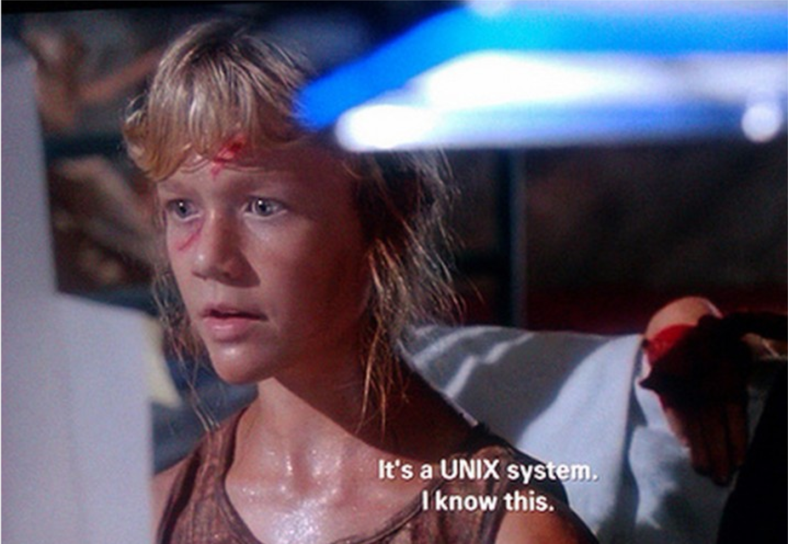
产业
- AT&T的管理层发现unix和c有利可图
- 就把这个工程师业余时的作品商业化
- 并开始销售
- 而且生成私下拷贝都是犯法的
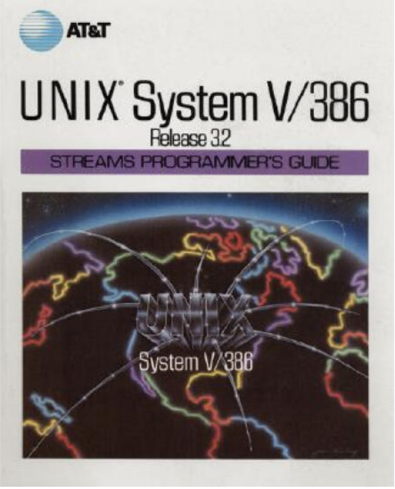
软件行业发展
- 软件公司 越来越多
- 软件制作 逐渐从 爱好者的分享
- 变成了 商业公司 盈利的手段
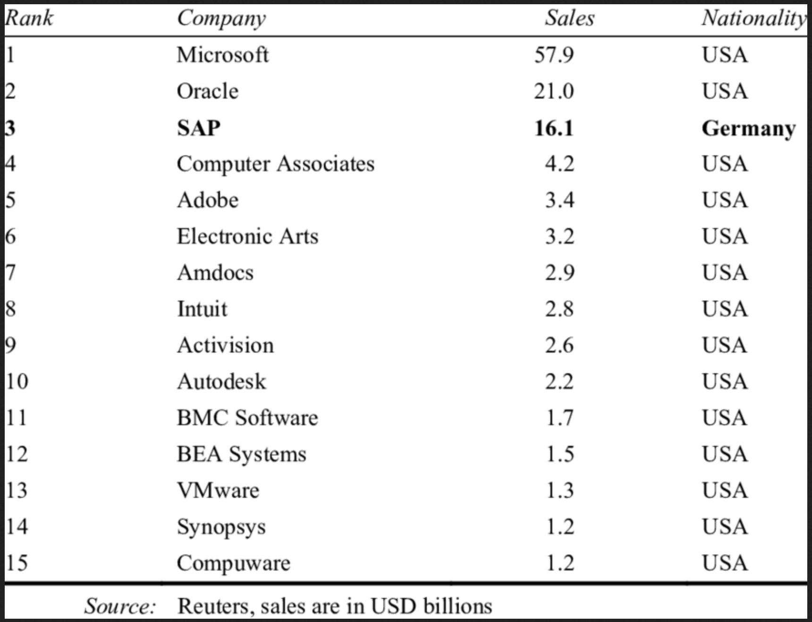
- 利润 确保
- 软件公司 扩大雇佣规模
- 使得 软件行业 加速进化
- 资本 有意愿 进一步收购
- 扩大规模
- 软件 开发
- 那 软件行业
许可证
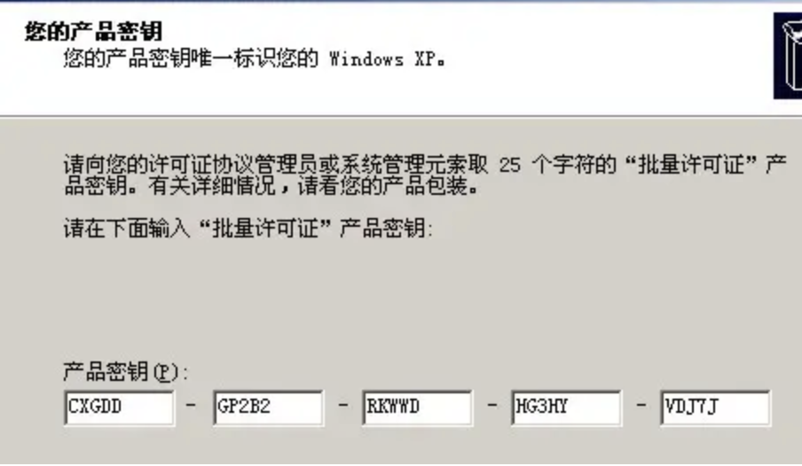
- 销售
- 许可证 (Licence)
- 序列号 (Serial Number)
- 成就了 目前最大的软件公司
- 许可证 这种说法
许可
- 英国王室 对海盗
- 好望角以东 没挂英国国旗的船只
- 通过 劫掠西班牙商船
- 摧毁 他国海上贸易
- 最终 战胜了 无敌舰队
- 终结了 西班牙称霸梦
软件授权
- 商业软件
- 用户 看
不见 源代码
- 更不能 修改 源代码
- 商业软件公司
- 希望 通过闭源
- 把编写软件 这件事
- 只有 自己 才能做
- 微软office 或者 3dmax
- 都 看不到
源代码
- 只能下载 编译后的
- 安装包 或 可执行二进制文件
- 这是
工业化
- 工业化
- 更重视 职业化、专业化
- 对标准化工具的掌握
- 遵从 上级命令
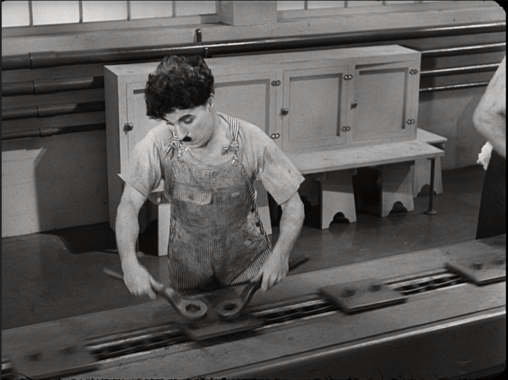
复仇
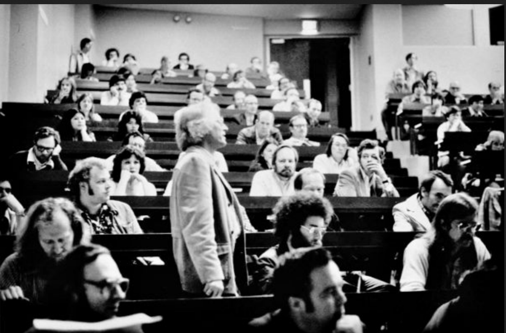
从 家酿 到 产业
- 最初家里 蒸馒头、酿酒、泡菜 都是个人爱好
- 并且将吃不了的 分给 亲戚朋友
- 并不存在 馒头厂、酒厂、泡菜厂
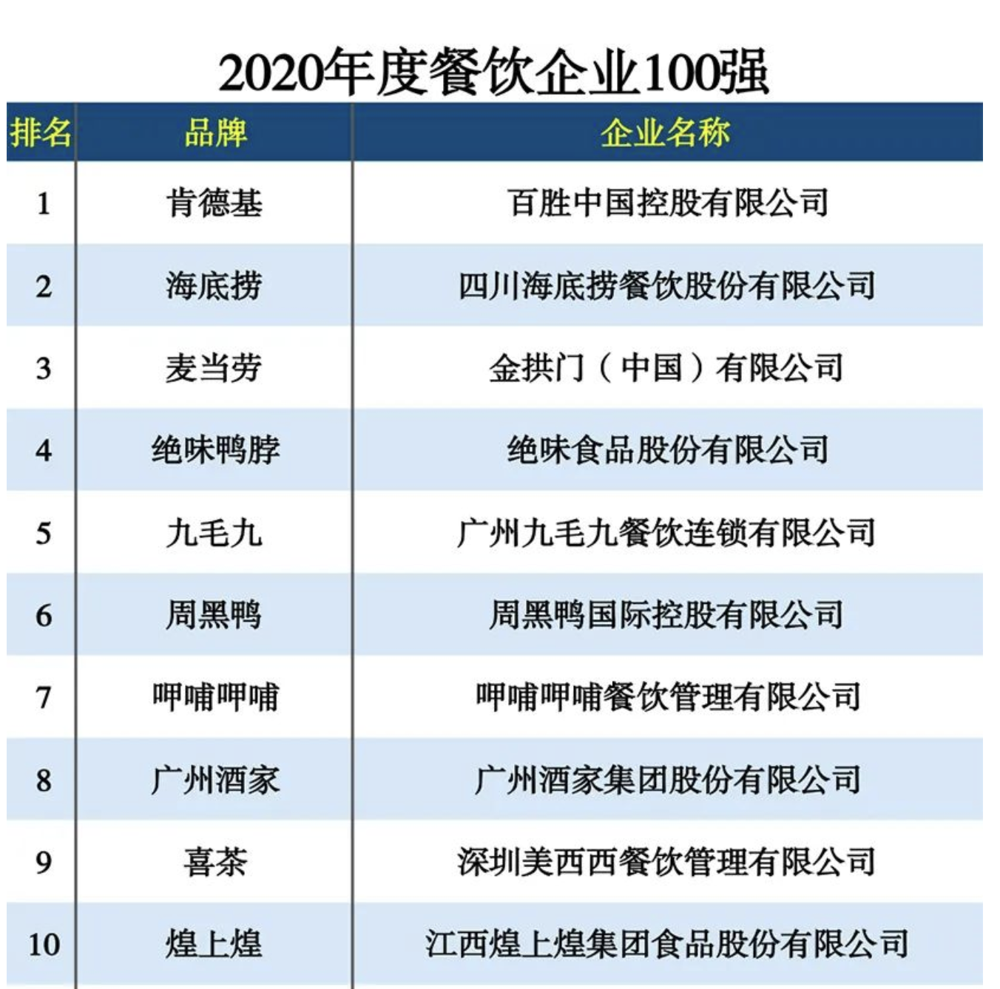
殊途同归
源头
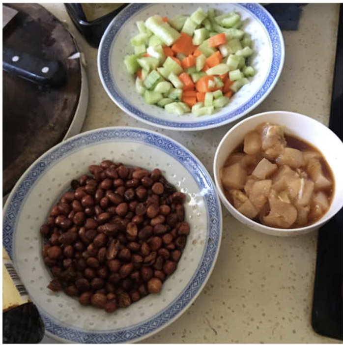
回顾最初
- 最初 采集文明的时候
- 摘果子 也都是 个体行为
- 摘了 可以给 亲戚朋友
- 不存在 摘果子行业
家酿 vs 酒厂
| 个人兴趣爱好 |
大规模工业制造 |
| 织毛衣、围脖、手套 |
曼彻斯特 纺织行业 |
| 家酿葡萄酒 |
大规模现代化白酒行业 |
| 自己蒸馒头 |
馒头工厂 |
| 农户种地 |
大规模机械化种植产业 |
| 写诗讲故事 |
出版印刷行业 |
| 唱歌 |
唱片行业 |
| 软件爱好者 |
大规模商业软件产业 |
- 企业家 引领工业化
- 替代爱好、小手工业、农业的过程
- 大势所趋 不可逆转
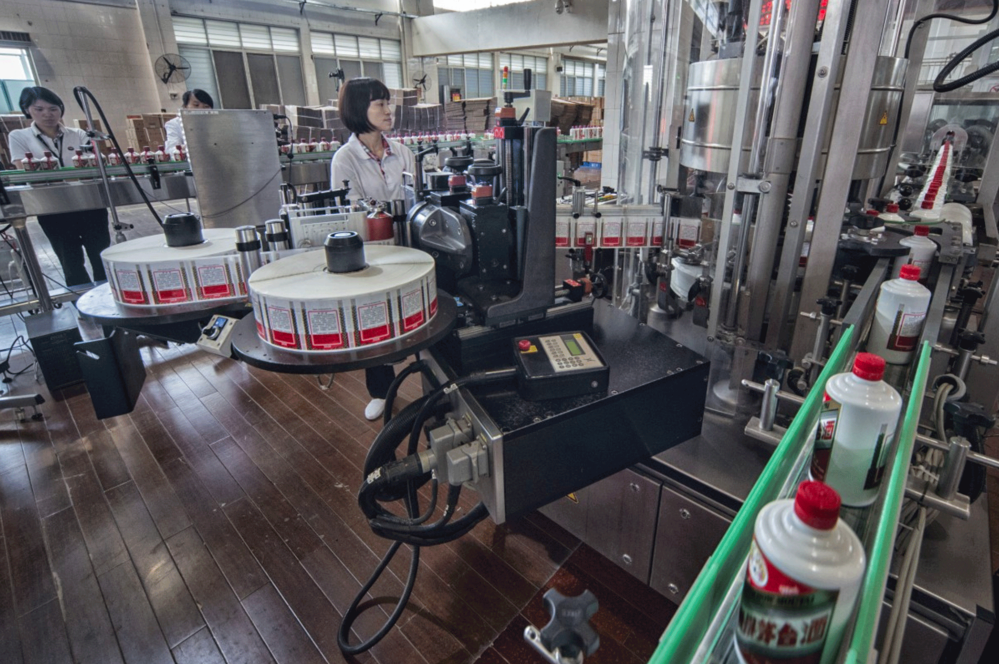
Stallman
- 理查德·马修·斯托曼
- Richard Matthew Stallman
- 被称作
rms
- 出生在纽约
- 从小喜欢计算机
- 长大了之后
- 在 mit人工智能研究所 工作
- mit 是当时的 黑客文化核心
秘密
- Stallman家族 是
- 原来应该是 商铺摊主
- 典型犹太姓
- 应该是最了解
- 商业、商品和复利的
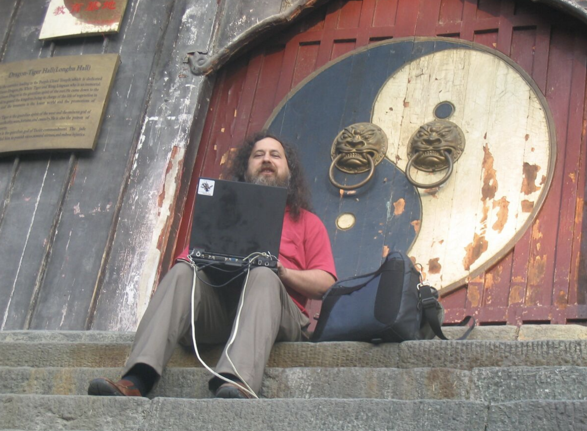
媒介变化
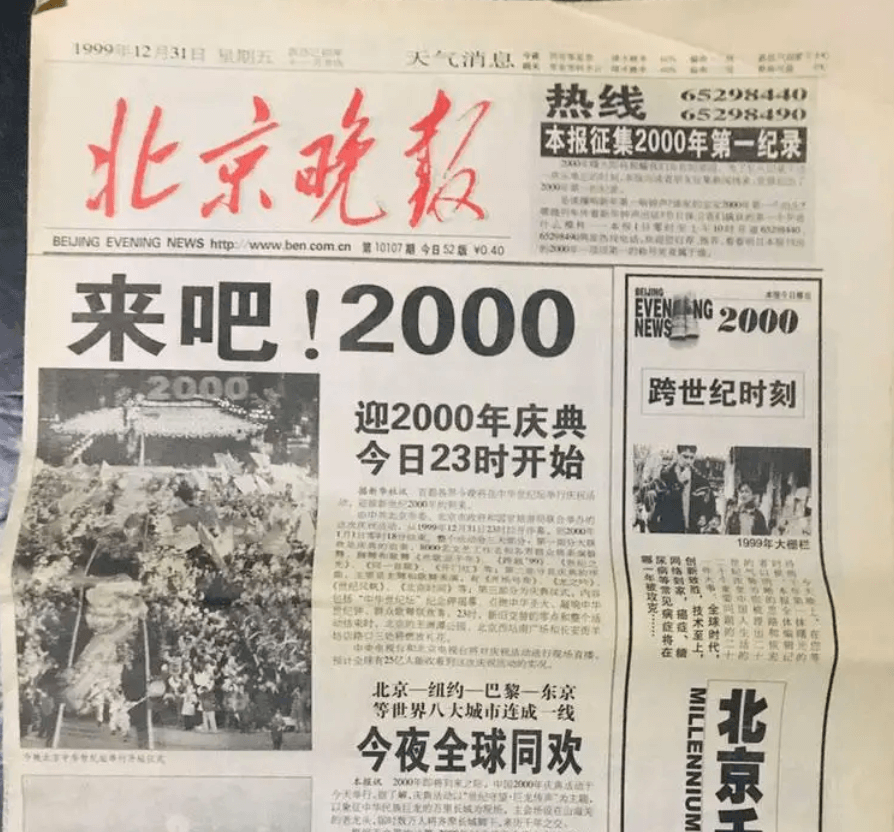
分发
- 报纸、杂志、书籍
- 都需要 具体的 纸张和油墨的 原子
- 也需要 制造产品的物理过程
- 还需要 存储、运输 这些原子
- 以前上班 凌晨出门时
- 真的曾经 见到
- 每天报纸的 分发工作
- 是 真·人工物理分发
视听媒体
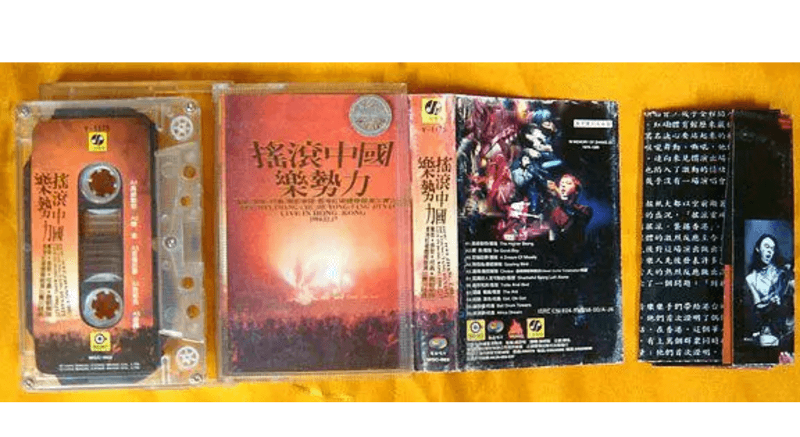
拷贝
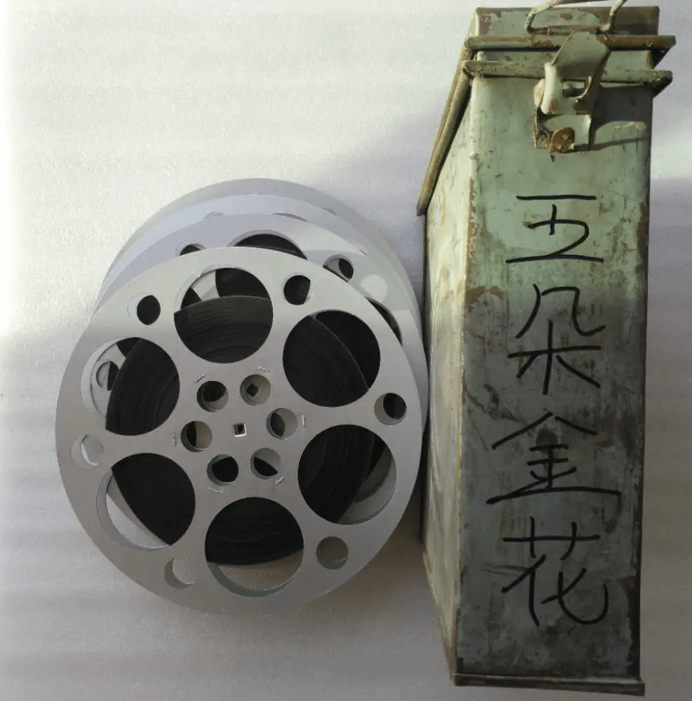
- 原来 内容也都得有个 物理介质
- 所有 店铺、唱片公司、影视公司
- 计算机 出现
后
总结
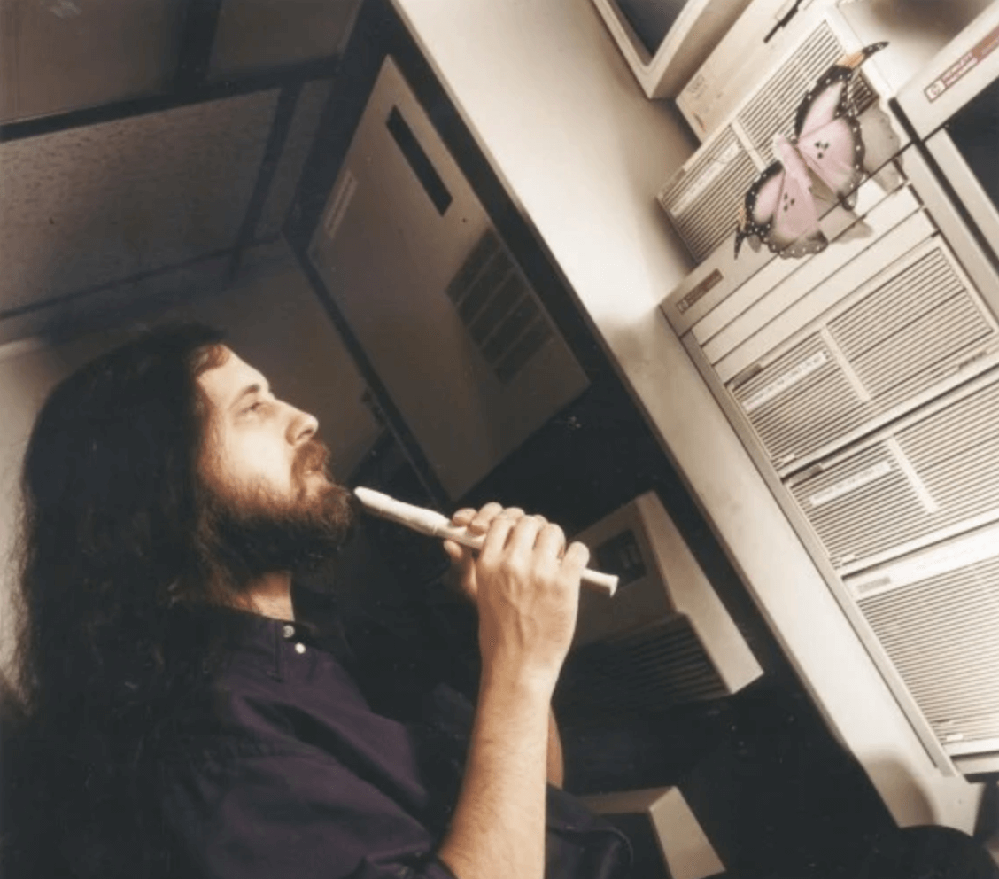
- Stallman 发现了 软件行业
独特之处
- 不同于 以往所有的工业的
特点
- 具体 是
什么特点 呢？🤔
- 我们下次再说！👋